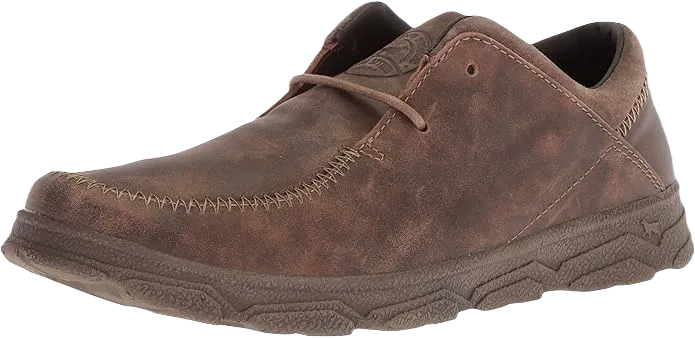

Top 11 Best Irish Setter Work Boots in 2024
The choice of boots is crucial for activities like enjoyment, running, walking, hunting, and working. The company has introduced the 854 boot style, crafted from distinctive red russet leather, which reflects the inspiration behind the Irish Setter name. This brand has established itself as a leading choice among hunters and workers alike. The Irish Setter boots are a specific line owned by the Red Wing Shoe Company, which has been producing premium footwear since 1905. The Irish Setter Men’s Work Boot is widely recognized as one of the best work boots available on the market today. Below, we highlight the features of these exceptional boots.
As a subsidiary of the renowned Red Wing brand, Irish Setter boots are celebrated for their outstanding craftsmanship, which emphasizes durability and comfort in their work boot collection.
-
#1
Irish Setter Work Men’s Ashby 6

The upper portion of these boots is crafted from high-quality, ruddy reddish-brown leather, featuring triple stitching for added durability. The thick rubber sole provides ample traction, ensuring a strong grip on various surfaces. Designed as lace-up boots, they come with long-lasting steel eyelets and a removable polyurethane footbed for comfort and support. The Irish Setter work boots require minimal break-in time, making them convenient right out of the box.
These boots offer immediate comfort upon first wear, as the high-quality leather softens after just a day of use. The EVA midsole, equipped with a removable cushion, ensures enduring comfort, while the padded collar and tongue provide additional cushioning around the ankle to prevent rubbing.
These boots meet safety standards, specifically Electrical Hazard ASTM F2892-11, making them safe to wear in environments where electric shock is a risk. However, unlike traditional steel-toe work boots, they are not designed to withstand compression. Additionally, these boots are heat-resistant, capable of withstanding temperatures up to 475°F. -
#2
Irish Setter Men’s Wingshooter ST-83632
The upper portion of these boots is crafted from high-quality brown leather, ensuring durability and style. The outer sole is made of robust rubber, providing a strong grip on various surfaces. Additionally, the midsole features EVA foam, which enhances comfort during wear. The boots are constructed with triple stitching for added durability, and they include an aluminum toe that is lightweight while still offering effective protection. These Irish Setter work boots require only a short break-in period before they feel comfortable.
When you take them out of the box, these boots are surprisingly comfortable right from the start. After wearing them for just one day, the leather becomes noticeably softer and more pliable. The EVA padded insole is removable, allowing for customized comfort, and the collar and tongue are also cushioned, providing support around the ankle while preventing rubbing and irritation.
While these boots meet the ASTM F2892-11 electrical hazard safety standards, they are not designed to withstand heavy compression like traditional steel-toe boots. They do offer heat resistance, withstanding temperatures up to 475 degrees Fahrenheit. However, it's important to note that these boots are not waterproof, so applying a water-resistant treatment before wearing them in wet conditions is recommended. -
#3
WINGSHOOTER ST Men’s 6 Inch

The upper of these boots is crafted from full-grain amber leather, which, combined with the white sole, creates a stylish appearance. Constructed with a Goodyear leather welt, these boots feature a non-metallic toe that meets ASTM F2413-18 safety standards, offering ample protection against workplace hazards that could lead to injury.
Equipped with an ultra-dry waterproofing system, the inner lining is designed with moisture management technology for long-lasting comfort and performance. The outsole is made of durable rubber, while the midsole consists of EVA for added cushioning. The traction tread sole provides excellent grip, and the wedge sole design ensures outstanding comfort and support on the job. These boots fit well and provide the necessary support for long hours of wear.
In addition to their stylish design and safety features, these boots are built for functionality, making them a reliable choice for various work environments. With their combination of comfort, durability, and protection, they are an ideal footwear option for those who require both style and safety on the job. -
#4
Irish Setter Men’s 83907 Wellington
The Irish Setter Men’s 83907 is an 11-inch pull-on boot crafted from dark brown high-quality leather, featuring durable triple stitching. The outsole is made from Vibram rubber, offering excellent traction and grip on various surfaces. These pull-on boots are designed with a 15.5-inch opening, making them easy to wear
These work boots require minimal break-in time, with a shaft height of 11.5 inches from the arch and a heel height of 1.5 inches. They meet the Electrical Hazard ASTM safety standards, ensuring they are safe for environments where electrical risks are present. Unlike traditional steel-toe boots, these do not provide compression but are heat-resistant and built for long-lasting durability.
Ideal for challenging work conditions and rugged terrain, these boots also allow for the removal of the cushioning polyurethane insole, accommodating custom orthotics if desired. The deep-cleat lug pattern on the outsole enhances stability and security, making them a reliable choice for demanding tasks. -
#5
IRISH SETTER® VAPRTREK HUNTING BOOTS
The upper of these boots is crafted from high-quality, tough leather with waterproof properties. Built using Armatec™ XT technology, they offer enhanced durability and abrasion resistance. The camo-dyed leather gives VaprTrek boots their unique style, making them a top choice for hunters and hikers. The design ensures a perfect fit with lace-to-toe eyelets, while the EVA midsole, equipped with a removable cushion, provides lasting comfort.
The top layer of the EVA footbed is both breathable and durable, ensuring optimal comfort. Inside, the lining wicks away moisture to keep your feet dry. The padded collar enhances comfort in various temperatures, and the Cushion™ Comfort Tongue adds extra support in the shin area.
Additionally, these boots feature a specific material called Scent Ban, which helps prevent the growth of odor-causing bacteria. Engineered with Primaloft® technology, they offer warmth in cool conditions, while the durometer RPM material in the midsole extends to the outsole for added protection and comfort. -
#6
Irish Setter Crosby work boots
These boots are constructed from a combination of leather and nylon, with a durable rubber sole. The Irish Setter Crosby work boots offer sensible comfort due to several features, including a memory foam detachable insole and a supportive midsole. They provide a comfortable fit on both soft and hard surfaces, with a shaft measuring 11 inches from the arch, ensuring a secure feel when worn.
Inside, the lining effectively wicks away moisture, creating a dry environment for your feet. The padded collar enhances comfort in all temperature conditions, while the double stitching adds a layer of durability. These boots are designed to be heat-resistant (melting at temperatures above 475º F) and resistant to oil and gas. The Armatec protective coating enhances toughness and abrasion resistance.
Additionally, the cushioned tongue is made from four-way stretch nylon to reduce pressure around the metatarsal area, while the Energ fabric provides energy return with each step. The HRO soles are specifically designed to perform well in high-temperature environments. -
#7
Irish Setter Men’s 2870 Vaprtrek Waterproof 8

The upper part of these boots is crafted from full-grain waterproof leather, featuring a BOA lace-up closure for a secure fit. With a flat design that lacks a heel, the boots offer stability and comfort. The rubber sole ensures good traction, while the interior is lined with moisture-wicking nylon to effectively manage foot moisture, creating a long-lasting dry environment.
Equipped with an UltraDry waterproofing system, these boots are designed to keep your feet dry in various conditions. The RPM technology composite sole reduces the overall weight of the boot while enhancing durability and strength without adding extra materials. Additionally, the boots feature a Cushion™ Comfort tongue that provides comfort in the shin area and alleviates pressure from the top of the boot.
These thoughtful design elements ensure that the boots not only perform well but also offer a comfortable experience for the wearer. -
#8
Irish Setter Men’s Ely 6

These modern-style work boots are crafted from Mocha crazy horse leather, featuring a synthetic sole that is directly attached to the leather through a non-welt construction method. The PU-V grip outsole enhances comfort, making them easy on your feet, while the non-metallic shank provides additional support. The polyurethane footbed is removable for convenience.
Designed with an Ultra Dry waterproof system, these boots are lined with waterproof components to keep your feet dry. They meet the safety standards of Electrical Hazard ASTM F2892-11, ensuring they are safe for environments where the risk of electric shock exists. This hybrid lace-up design makes them suitable for both hiking and work, offering versatility and functionality.
With their combination of durability, safety features, and comfort, these boots are an excellent choice for those seeking reliable footwear for various activities. -
#9
Irish setter Men’s 8″ Steel

These boots are crafted from dark brown worn saddle leather and feature a classic lace-up design. The footbed is made of polyurethane, ensuring a comfortable fit and can be easily removed for cleaning or replacement. Engineered with King Toe technology, these boots include a steel shank that enhances durability and provides 40 percent more room in the toe area, offering extra comfort. The steel toe protects your feet from harsh working conditions.
Meeting the safety standards of ASTM F2413-11, these boots provide ample protection against workplace hazards that could lead to injury. The shaft measures 8.5 inches from the arch, while the synthetic sole is constructed from ENDURANCE Cross Wire for added resilience. The boots feature a 12-inch opening for easy wear and are constructed with triple stitching and a Goodyear leather welt for enhanced durability.
Combining comfort, safety, and a robust design, these boots are ideal for those working in demanding environments, ensuring your feet remain protected and comfortable throughout the day. -
#10
The Irish setter Traveler Brown
The company has launched boot style 854, crafted from distinctive red russet leather that inspired the Irish Setter name. This brand has become a leading choice among hunters and workers alike. The Irish Setter Traveler Brown Leather boots are versatile footwear designed for various occasions, whether at home, in a cabin, or at the office.
The upper portion of these boots is made from high-quality leather, providing a sturdy and stylish appearance. The footbed features added cushioning for comfort, while the lightweight sole is engineered with RPM technology, enhancing both durability and strength. These boots are designed as a closeout style, ensuring they are both long-lasting and resilient.
Ideal for those who require reliable footwear for different settings, these boots combine comfort, functionality, and a classic aesthetic, making them a perfect addition to any wardrobe. -
#11
CASS MEN’S LEATHER STEEL TOE ROMEO BOOT
The boots are crafted from full-grain trout book leather in a rich brown color. Equipped with a steel toe for added protection, these boots feature a durable rubber outsole. The EVA footbed is both breathable and long-lasting, while the heel measures approximately 1.25 inches. The CASS MEN’S boots are an excellent choice for workers in various environments, with an HRO heat-resistant sole.
Designed to resist slipping and oil, the outsole provides additional safety and stability. The footbed is made of polyurethane, ensuring a comfortable fit and is removable for convenience. These boots meet the ASTM F2413-18 safety standards, offering ample protection against workplace hazards that could lead to injury, including electrical hazards. They are suitable for standing and working in harsh conditions, effectively fulfilling job requirements.
These boots meet the ASTM F2413-18 safety standards, offering ample protection against workplace hazards that could lead to injury, including electrical hazards. They are suitable for standing and working in harsh conditions, effectively fulfilling job requirements.